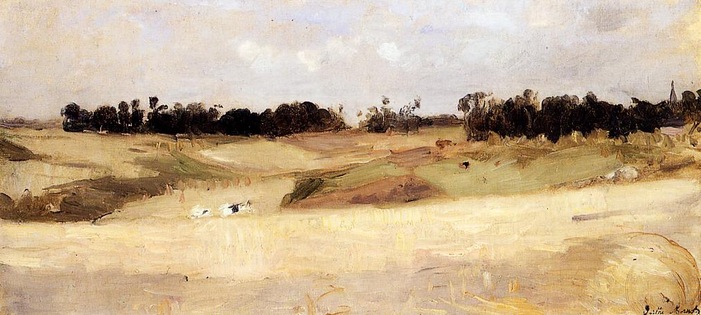

Tags: fields-and-plains, forests-and-trees
Style: Impressionism
Artist: Morisot Berthe
Title: Landscape near Valenciennes
Year: 1875
Genre: landscape
Categories: geyser (82.5%); cliff (3.4%); cliff_dwelling (1.9%); bison (1.2%); breakwater (0.6%)
Similar Images: